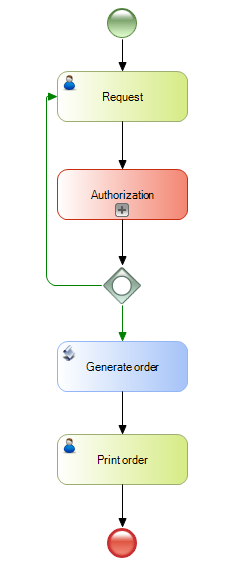

Embedded Subprocess in BPD
Objects: Business Process DiagramSymbol
PurposeWhen using a composite diagram, it is possible to identify a group of activities that can be encapsulated in an embedded subprocess in order to obtain a more compact diagram with a global and understandable view of the process. Another common use of embedded subprocess, is when you want to do something to a group of tasks, such as adding a timer. In this case, instead of creating another process to group those tasks you can do it within the same process. Its main features are as follows: •They allow us to define a subprocess within a parent process, and it can't be reused by other processes. •The relevant data of the parent process will be available for the subprocess with no need for mappings. •They can't be started with events of trigger type (such as a timer), as only the parent process decides when they have to be started. An embedded subprocess can be edited within the parent process or by double-clicking on the subprocess to open it in another tab. This is useful for editing complex processes or processes which are nested in various subprocess levels. Example See Also
|


| Backlinks | ||
| Category:BPD Subprocesses | Toc:GeneXus BPM Suite | Reusable Subprocess in BPD |